Historia
La DFB (Deutscher Fuball-Bund/Federación Alemana de Fútbol), se fundó el 28 de enero del 1900. Fue creada por los representantes de 86 clubes de fútbol de todo el imperio Alemán. En esa época, el fútbol en Alemania estaba completamente desorganizado y era rechazado socialmente. Era visto como una "enfermedad Inglesa", y un deporte caótico, violento y extranjero. Los clubes necesitaban unirse en una Federación fuerte para ganar legitimidad legal y ser aceptados. Ferdinard hueppe fue elegido como el primer presidente, gracias a él, el fútbol tuvo mejor fama. El decía que era un deporte excelente para la salud física.
Actualmente, la selección alemana se encuentra en una fase de reconstrucción total y renovación generacional, dejando atrás los años más difíciles de su historia reciente. Ha cambiado su rostro por completo para competir al máximo nivel, y dar su mejor impresión en el Mundial 2026.
Historia en mundiales
- Suiza 1954: Campeones por primera vez
- México 1970: Eliminados en semifinales por Italia (4-3), en el llamado "Partido del siglo"
- Brasil 2014: Campeones, humillando a brasil con un 7-1
- Qatar 2022: Elminados en fase de grupos

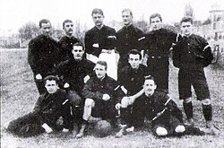
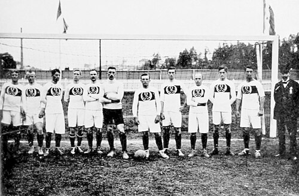
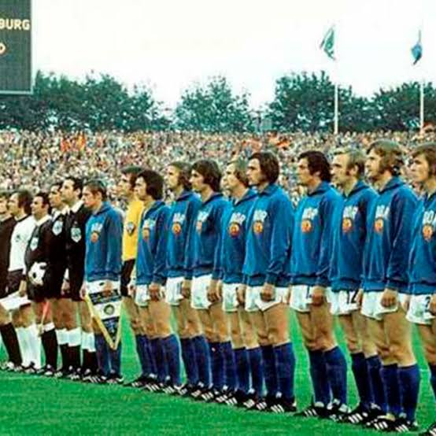


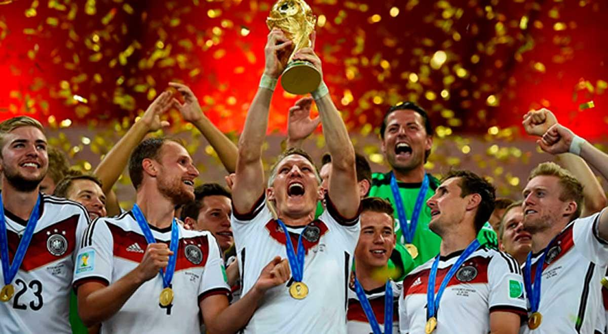
Jugadores convocados y DT
Arquero
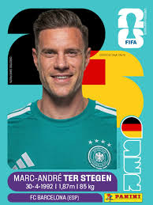
Defensores
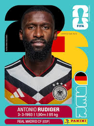
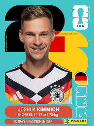
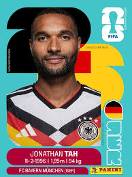
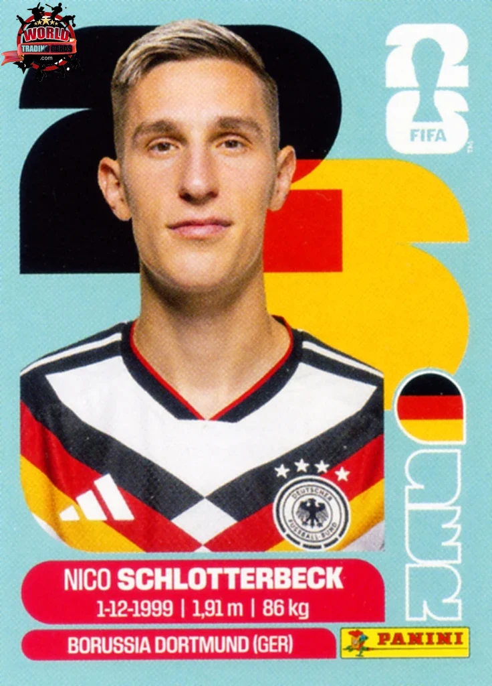
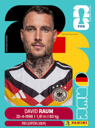
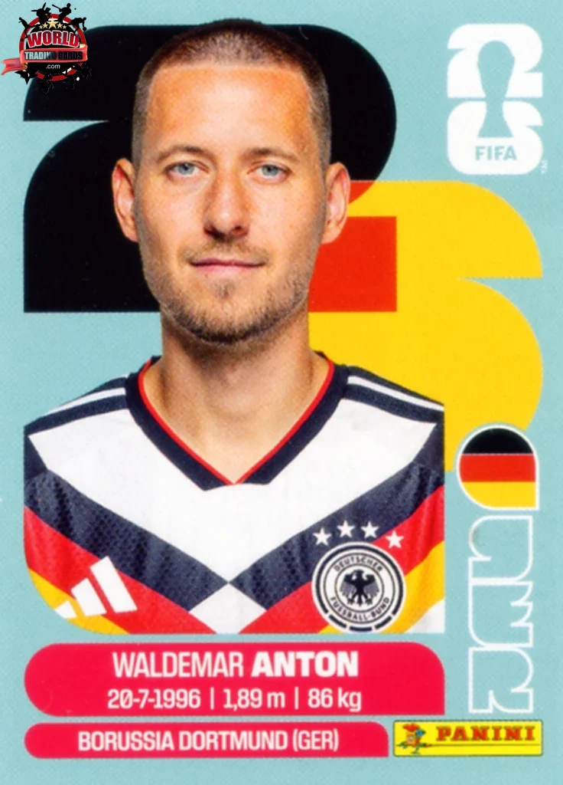
Mediocampistas
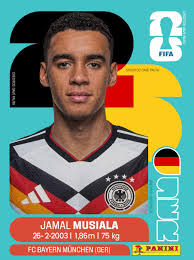
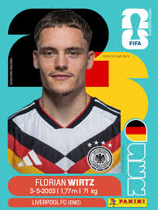
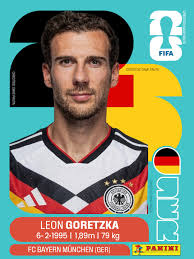
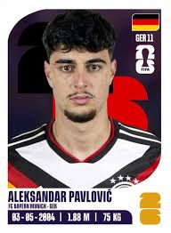
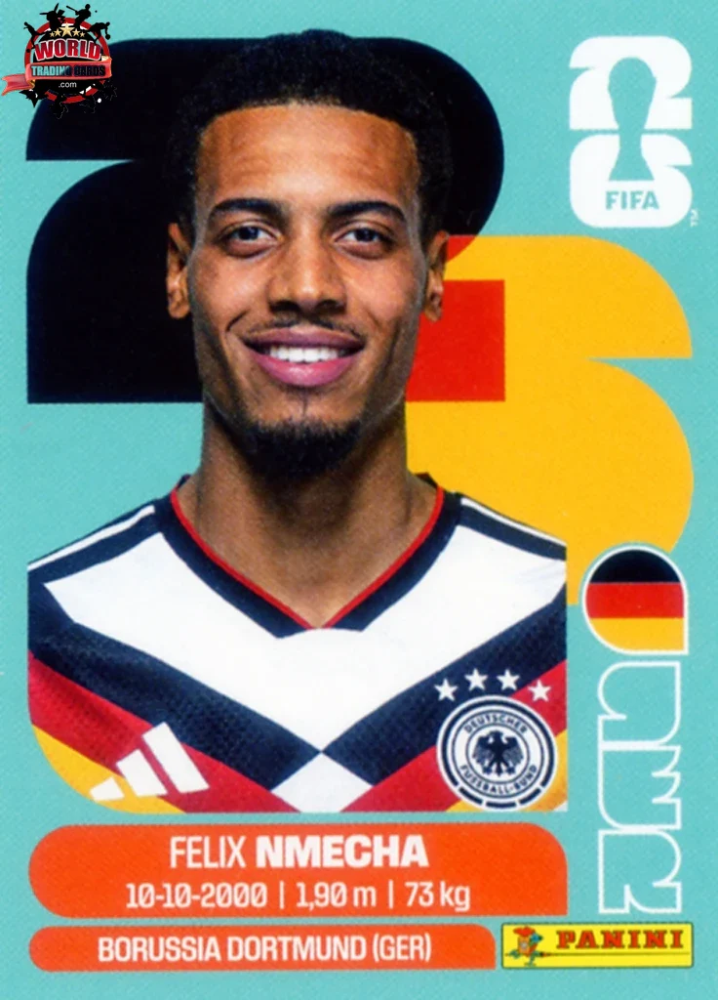
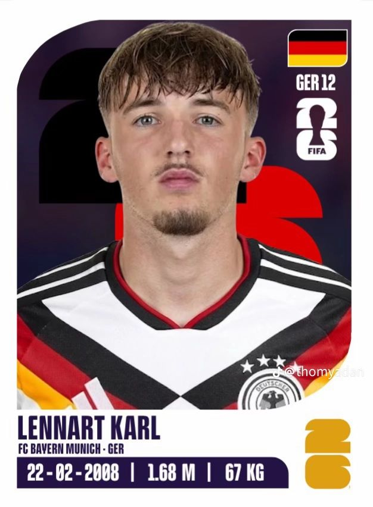
Delanteros
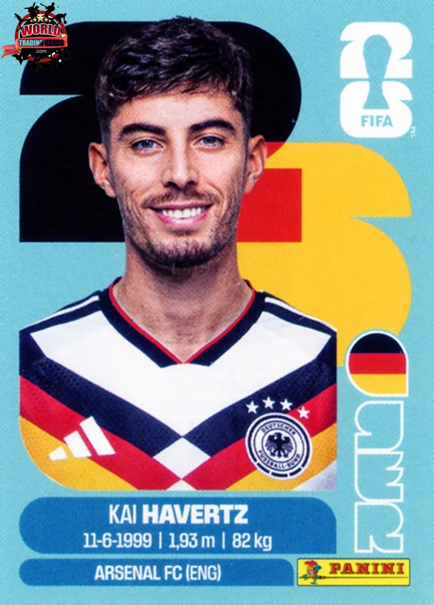
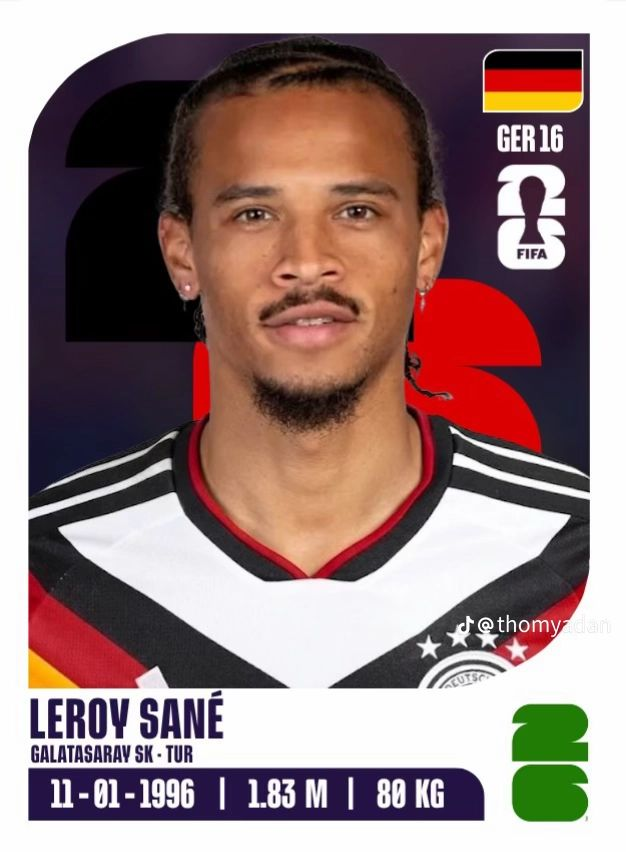
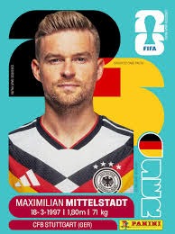
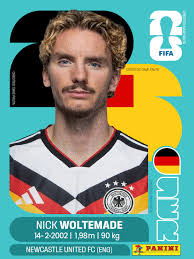
Director técnico

Julian Naglesmann se destacó por su juventud, capacidad táctica y su estilo de juego ofensivo. Debido a varias lesiones, tuvo que abandonar su carrera como futbolista y comenzó a dedicarse a la dirección técnica. En septiembre de 2023 asumió como entrenador de la selección alemana, convirtiéndose en uno de los técnicos más jóvenes de su historia. Durante su etapa al frente de Alemania, dirigió al equipo en la Eurocopa 2024, donde llegó hasta los cuartos de final, y en la Liga de Naciones de 2025, en la que alcanzó las semifinales. Dejó el cargo en julio de 2026, después de la eliminación de Alemania en el Mundial.
Calendario
Grupo: E Alemania, Curazao, Costa de Marfil, Ecuador
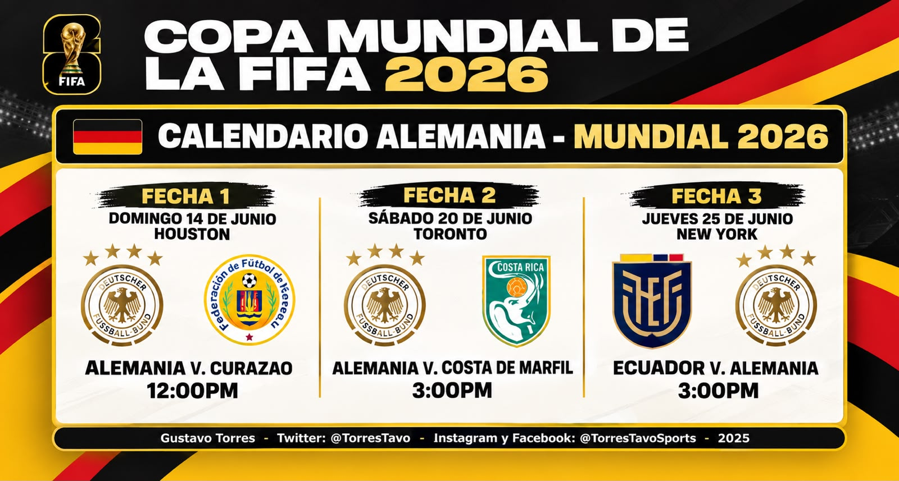
Curiosidades
- A pesar de que su bandera es negra, roja y amarilla, siempre juegan con camisetas blancas simbolizando al antiguo reino de Prusia, el cual unificó a Alemania en el siglo XIX.
- La tradición de los jugadores al ganar un mundial es bañarse en gigantescos vasos de cerveza en los vestuarios.
- Es la selección que mas goles ha metido en la historia de los mundiales (238) y la que más finales ha jugado (8).
- El delantero Miroslav Klose es el máximo goleador de la copa del mundo con 16 goles, superando a Ronaldinho.
- En el mundial 2010, cada que el DT Joachim Lom usaba un sueter azul, el equipo metía 4 goles. Se volvió tan famoso que este fue subastado por un millón de eruos para beneficiencia.
- Tras ganar el mundial 2014, les cayó la "maldición", ya que en Russia 2018 y Qatar 2022 quedaron eliminados en la primera ronda, algo que nunca les había pasado dos veces seguidas.
- En el mundial Alemania 1974, el Chileno Carlos Caszely recibió la primera tarjeta roja directa en la histora de los mundiales.
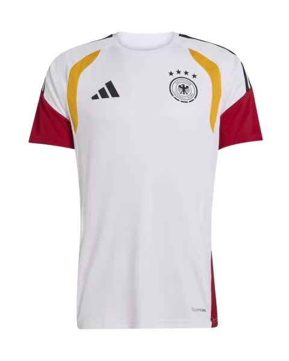
Camiseta de entrenamiento
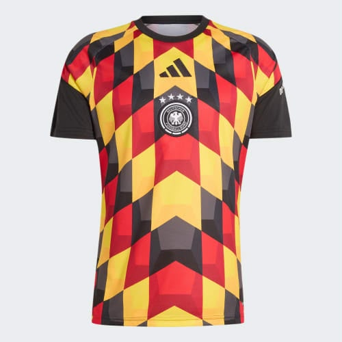
Camiseta pre-partido
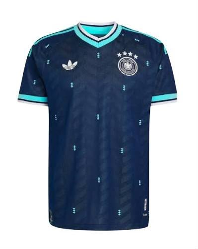
Camiseta suplente
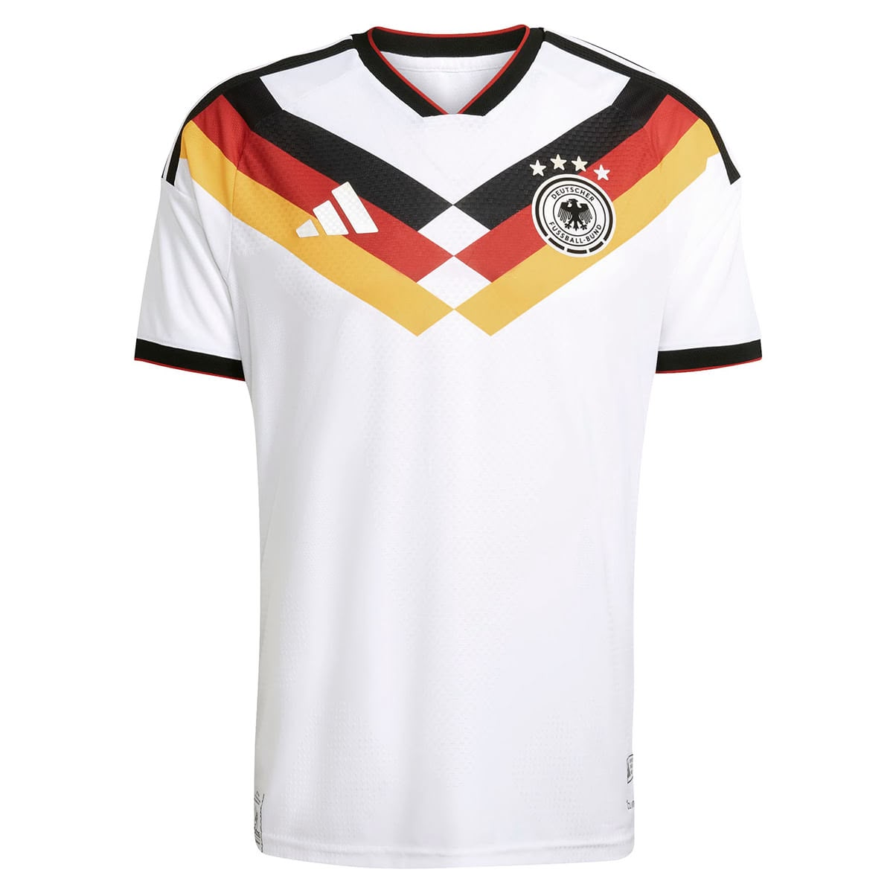
Camiseta titular